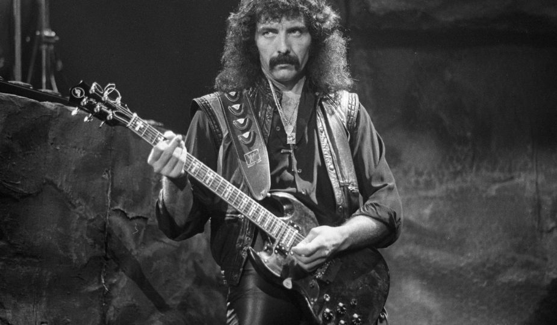
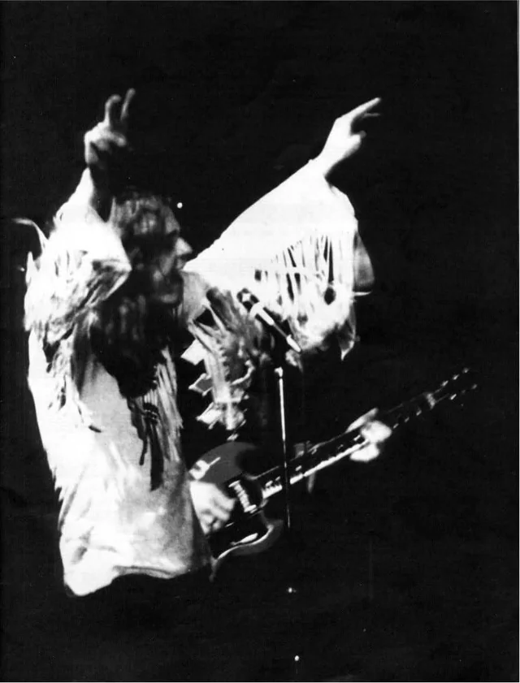
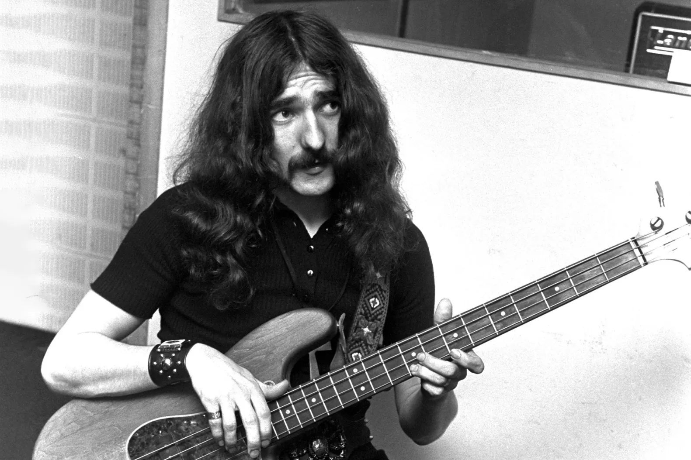
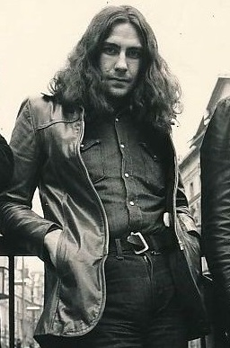
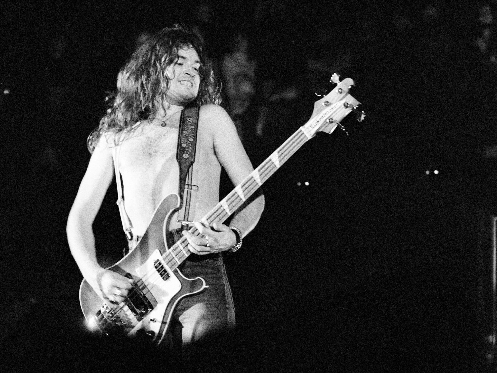

Members
Black Sabbath, originating in Birmingham in 1968, was initially composed of four pivotal members who played crucial roles in shaping the band's legendary sound and establishing them as pioneers of heavy metal music.
Tony Iommi
Tony Iommi, the guitarist, is renowned for his innovative use of heavy distortion and distinctive guitar style, which became a hallmark of Black Sabbath's music. His contributions were instrumental in defining the band's iconic sound.
Ozzy Osbourne
Ozzy Osbourne, the vocalist, brought a unique voice and captivating stage presence to the group. His haunting vocals and charismatic persona became synonymous with Black Sabbath's early years, contributing significantly to their success and influence.
Geezer Butler
Geezer Butler, the bassist, not only provided depth and heaviness to the band's music with his bass playing but also contributed lyrically with themes revolving around darkness and the occult. His contributions added layers of meaning to Black Sabbath's compositions.
Bill Ward
Bill Ward, the drummer, played a vital role in providing the rhythmic foundation for Black Sabbath's heavy sound. His powerful and dynamic drumming style helped define the band's distinctive musical identity.
Honorable Mentions
Ronnie James Dio
During Ronnie James Dio's tenure with Black Sabbath from 1979 onwards, following Ozzy Osbourne's departure, the band underwent a transformative period marked by Dio's powerful vocals and songwriting prowess. Dio's addition brought a new energy and thematic direction to the group, exploring fantasy, mythology, and occult themes in their music. His distinctive voice complemented Tony Iommi's guitar work, resulting in two acclaimed albums, "Heaven and Hell" (1980) and "Mob Rules" (1981), which showcased a blend of melodic sophistication and heavy, doom-laden sound. Dio's era solidified Black Sabbath's status as metal pioneers and expanded their artistic horizons, garnering them critical acclaim and a devoted fan following.
Glenn Hughes
During Glenn Hughes's tenure with Black Sabbath from 1985 to 1986, the band ventured into a fusion of heavy metal with funk and soul influences, driven by Hughes's soulful vocals and bass expertise. His contributions during this brief period, notably on the album "Seventh Star" (1986), added a distinct flair to Black Sabbath's sound, showcasing a blend of bluesy melodies and heavy rock elements. Hughes's time with the band marked a departure from their traditional style, demonstrating their versatility and willingness to explore diverse musical avenues.
Tony Martin
During Tony Martin's time with Black Sabbath from 1987 to 1991 and again from 1993 to 1997, the band underwent a creative resurgence led by Martin's powerful vocals and songwriting abilities. His versatile voice allowed Black Sabbath to explore a spectrum of musical styles, ranging from classic heavy metal to more melodic and progressive tones. Albums like "The Eternal Idol" (1987), "Headless Cross" (1989), and "Tyr" (1990) exemplify this period of experimentation and renewed energy. Martin's contributions played a pivotal role in revitalizing the band's sound, earning them critical acclaim and commercial success during his tenure.